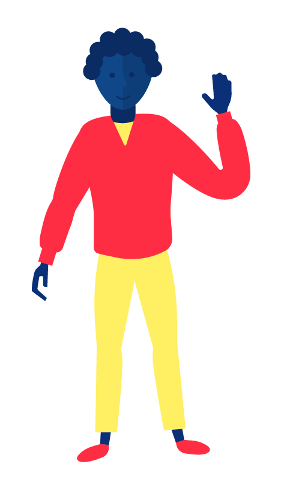
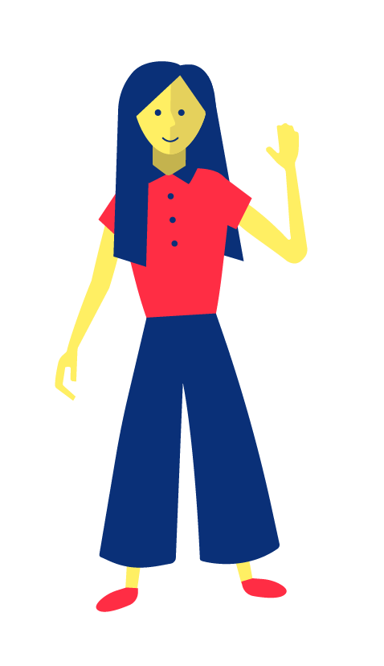
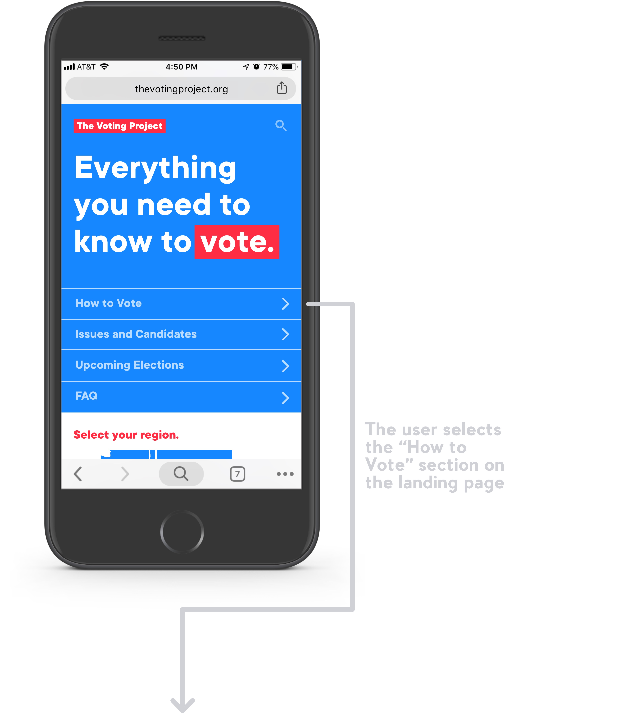

Background
Overview: During the Summer of 2018 I had the opportunity to intern on the Experience Design Team at Digitas (a Digital Marketing Agency in Boston). In addition to working on other experience design projects, I spearheaded an intern case study project for a pro bono client with a team of interns from different disciplines. Our intern case study includes a pitch for a marketing campaign, called The Voting Project, to encourage members of Generation Z to vote on social issues (climate change, gun control and equality) as well as the user experience design for a voter education website.
Scope: Over the course of this project, I coordinated a team of interns to research Gen Z voting trends and current voting experiences, define a target audience and persona, define a problem, ideate solutions, create a marketing campaign strategy, design the user experience for a product that will improve our target users’ voting experience, refine and apply an already existing brand, create a budget, propose a social media campaign, produce a short animation and pitch to a client.
Tools: Google Drive, Illustrator, Photoshop, Sketch, Keynote, pens and paper, whiteboards
Team
Whitney
Data and Research

Brenna
Project Management


Sophia (me!)
Experience Design, Campaign Strategy, and Creative Direction

Connor
Media Planning, Budgeting, and Music
Research
After receiving a brief from our client, we began by reading articles, studies and surveys on Generation Z and their voting trends. Here are a few of the insights we garnered:
77%
consider climate change, gun control and equality important issues (NPR).
70%
watch 2+ hours of youtube every day (Forbes).
96%
own smartphones (Pew Research).
“I don’t know how (to vote) and I don’t really know how to find more info”
— California College student (CALPIRG Education Fund)
Problem Statement
Generation Z is passionate about social issues but lacks information and accessible tools for decision making and voting.
We focused in on two specific areas:
Mediums: Information about Bills, Measures and Candidates is available, but often not in accessible formats or in media that Generation Z is familiar with using, such as youtube or websites. Here are some of the websites with valuable content about elections in Massachusetts.


Geography: Generation Z often moves to new cities or states for university or jobs, and they are often not registered to vote in these new locales. Although all of Generation Z can vote on issues of climate change, gun control and equality, the specific measures and candidates will be different depending on where they are registered to vote.
Strategy
Empower Gen Z with resources and information in the places they already search.
We are not interested in a marketing campaign that shouts about the importance of voting. Instead we will give our target users information and tools to make the voting process more accessible and so that they can be more informed.
Users
Our client asked us specifically to reach Generation Z, but as there are 67 million Americans who are considered part of generation Z and much variation in this group, we decided to focus in on reaching a specific demographic with in Generation Z.

Taylor and Taylor are both Freshman in college. They are enthusiastic to begin their new lives in college and as adults. They will be voting for the first time this Fall. Taylor and Taylor are not super politically active (they don’t regularly post about their political beliefs, organize political events or work for campaigns) but they do care about issues of climate change, equality and gun violence. They frequently use Instagram, Facebook and Youtube. The idea of mailing in a paper ballot seems very old fashioned to them.
 “In State Taylor” grew up in the same state that she attends college and “Out of State Taylor” grew up in a different state than were he attends college. Taylor and Taylor will both be voting on climate change, equality and gun control, but their specific bills, candidates and methods of voting will be different. It is important that we make information and tools that is relevant for people from all over the US accessible from the same place so that the resources can be used and shared amongst college students from different states.

Ideation

After a lot of brainstorming and ideation, we decided that our campaign would have 3 main elements to best reach Taylor and Taylor.
User Flows
This is an example user flow for a user who wants more information on how to vote.

Wireframes

Website
The site is divided into 4 sections: “How to Vote”, “Issues and Candidates”, “Upcoming Elections” and “FAQ”. Before asking the user for any information (such as the state that they live in or their zip code), it is important to engage them and show them that the website has something to offer. Because of this, the user is first presented with a reassuring statement about the purpose of the website, then prompted to select which section of the website interests them and then, after they are engaged and see the website has value, asked to provide personal information like state or zip code.

How to Vote: This is a user flow for a user who wants more information on how to vote. The user most associates with Massachusetts, is registered to vote and is interested in learning more about voting by mail.



Issues and Candidates Here the users can see which issues and candidates are up for election in the near future in their state. They can change their state at any time, as some voters might be unsure of what state to register to vote in.

Upcoming Elections In this section, the user can read about each of the upcoming elections in their state or region. Each of the measures, bills or candidates that are up for vote are listed under the election date.
Issues and Candidates Here the users can see which issues and candidates are up for election in the near future in their state. They can change their state at any time, as some voters might be unsure of what state to register to vote in.

Social Campaign
In addition to the website, our campaign includes an educational youtube channel where Taylor and Taylor can learn how to vote as well as, research on different measures and candidates that are coming up for vote.

I collaborated with my teammates Hayden, Ashley and Connor to produce one of the videos on our YouTube channel. I did the Art Direction, storyboarding, illustration and typesetting. I delegated some of the illustration work to Ashley, Hayden did all of the animation, and Connor produced the music and recorded the voice over. It was awesome to work with this team and see everyone's work come together in the final product. This is just one video in our YouTube channel, but other video ideas include “how to vote at a polling station”, “what to expect on a ballot” and “climate change bills in 2018”.
In addition to a Youtube channel, our social media campaign also includes an Instagram page, Facebook page, sponsored Instagram ads, partnerships with popular influencers, blurbs in university newsletters and partnerships with college campus ambassadors (who were also a part of the previous campaign).

Transportation Partnerships
Our campaign also includes partnerships with companies that provide transportation. In these partnership, The Voting Project will pay the transportation companies for the cost of all transportation on election day to the election polls and the companies will provide free transportation to election polls. The companies will also use their social media and other advertising channels to promote The Voting Project’s resources. This will be good for these companies corporate social responsibility.

Pitch Deck
At the end of this project, my team (along with the 4 other case study teams) had the opportunity to pitch to the client and some of the senior Digitas employees. Out of the 5 presentations, my group was selected as the winner!
Visual Language
I used a simple, bold graphic language to make the content easily digestible and to reassure the user. I used some of the brand language from the pro bono client, but I cut down on the number of illustration styles, typefaces and colors. I made these decisions to create more consistency and to better reflect the brand voice that the client wished to achieve. The content and visual language is friendly and enthusiastic, encouraging and patriotic, but not polarizing. I also created a UI style for the website.
Budget and Media Distribution
Conclusion
Measuring Success: Overall we estimate that our campaign has the potential to increase voting in our target audience by 2-3%. That is 35,465-53,198 more votes. We can measure the success of our campaign by measuring how many people visit our website, how long they stay, the number of interactions, the number of views on our videos, and the number of interactions with our social media content.
Reflection: This project was a great learning experience and it was awesome to work with such a motivated team. I learned about researching and understanding users, working with an existing brand and applying it to new designs, like the website UI, as well as animation production and how to communicate to a production team. I also learned a lot about other non-design aspects of marketing such as making media decisions based on data that we found in our research, budgeting and social media campaigns.